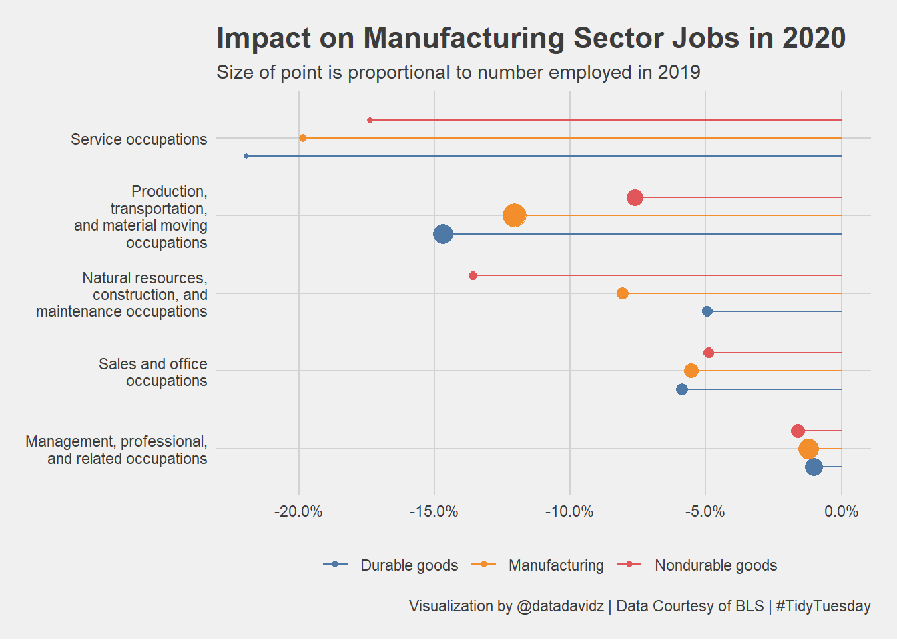

TidyTuesday: Earnings and Employment
Posted on February 23, 2021
A quick analysis of the weekly #TidyTuesday dataset organized by the R4DS Online Learning Community. My approach is to apply my data science skills to explore one question I have about the data and generate a visualization that addresses this question. The main purpose for me is to practice and try out new things. I am never completely satisfied with the end result but I do the best I can in a short period of time.
What I learned this week about R and the Tidyverse
- How to generate a “lollipop” chart
- Sizing the geom_point according to a numeric variable
- Dodging the position of the “lollipops” based on a categorical variable
Brief explanation of the dataset
This week’s dataset came from the U.S. Bureau of Labor and Statistics and contained employment numbers for different industries and occupations from 2015-2020. The total employment per category along with the break down by race and gender was available. I focused on the change in employment numbers between 2019 and 2020 where there was a big change due to the coronavirus pandemic. I was particularly interested in occupations within the manufacturing sector.
Wrangle
Initial conclusions from exploring the dataset:
- 330 NAs in industry which appeared to be a scraping artifact
- Race and gender included in the industry column (66 rows each)
- Issue with mining, quarrying label (two different labels, one with backslashes)
Clean up dataset issues mentioned above.
non_industry_terms <- c("Asian", "Black or African American", "White", "Men", "Women")
employed <- employed %>%
mutate(industry = str_replace(industry, "\r\n", " ")) %>%
filter(!is.na(industry)) %>%
filter(!(industry %in% non_industry_terms))
employed %>% count(industry) %>% head()
## # A tibble: 6 x 2
## industry n
## <chr> <int>
## 1 Agriculture and related 396
## 2 Construction 396
## 3 Durable goods 396
## 4 Education and health services 396
## 5 Financial activities 396
## 6 Information 396
Subset a dataset to include industries focused on the Manufacturing sector including Manufacturing (of course) along with Durable and Nondurable goods. The percent change in employment from 2019 to 2020 was calculated for each major occupation category.
mfg_durable <- employed %>%
filter(industry == "Durable goods" | industry == "Manufacturing" | industry == "Nondurable goods") %>%
filter(race_gender == "TOTAL") %>%
filter(year == 2019 | year == 2020) %>%
select(-minor_occupation) %>%
group_by(industry, major_occupation, year) %>%
summarize(employ_n = sum(employ_n), .groups = "keep") %>%
ungroup() %>%
group_by(industry, major_occupation) %>%
mutate(change = last(employ_n) / first(employ_n) - 1) %>%
ungroup() %>%
filter(year == 2019)
Visualize
Create a lollipop chart for the major occupations in the manufacturing sector. Many interesting manipulations within ggplot to draw and adjust the position of the lollipops.
mfg_durable %>%
mutate(major_occupation = fct_reorder(major_occupation, -change)) %>%
ggplot(aes(x = change, y = major_occupation, color = industry)) +
geom_point(aes(size = employ_n), position = position_dodge(width = 0.7)) +
geom_errorbarh(aes(xmin = 0, xmax = change), height = 0, position = position_dodge(width = 0.7)) +
scale_x_continuous(labels = scales::percent_format()) +
scale_y_discrete(labels = function(x) str_wrap(x, 25)) +
scale_size_continuous(labels = scales::comma_format(), guide = FALSE) +
ggthemes::scale_color_tableau() +
labs(title = "Impact on Manufacturing Sector Jobs in 2020",
subtitle = "Size of point is proportional to number employed in 2019",
x = "Employment Change vs. 2019",
y = NULL,
color = NULL,
size = "# of Jobs",
caption = "Visualization by @datadavidz | Data Courtesy of BLS | #TidyTuesday") +
ggthemes::theme_fivethirtyeight(base_size = 11)

Summary
Overall, the change in employment across the three industries in the Manufacturing sector decreased similarly across the major occupation categories. Management and professional jobs took the least hit while service occupations saw the largest percent decline. Interestingly, the manufacturing industry is always in the middle of the durable and nondurable goods. In my view, a successful implementation and use of a lollipop chart.
LS0tDQpvdXRwdXQ6IA0KICBodG1sX2RvY3VtZW50Og0KICAgIGNvZGVfZG93bmxvYWQ6IHRydWUNCiAgICBpbmNsdWRlczoNCiAgICAgIGFmdGVyX2JvZHk6IGZvb3Rlci5odG1sDQotLS0NCg0KPGJyPg0KDQpgYGB7ciBzZXR1cCwgaW5jbHVkZT1GQUxTRX0NCmtuaXRyOjpvcHRzX2NodW5rJHNldChlY2hvID0gVFJVRSkNCmBgYA0KDQpgYGB7ciwgaW5jbHVkZT1GQUxTRX0NCmxpYnJhcnkodGlkeXZlcnNlKQ0KYGBgDQoNCiMjICoqVGlkeVR1ZXNkYXk6IEVhcm5pbmdzIGFuZCBFbXBsb3ltZW50KioNCg0KKlBvc3RlZCBvbiBGZWJydWFyeSAyMywgMjAyMSoNCg0KQSBxdWljayBhbmFseXNpcyBvZiB0aGUgd2Vla2x5IFtcI1RpZHlUdWVzZGF5XShodHRwOi8vZ2l0aHViLmNvbS9yZm9yZGF0YXNjaWVuY2UvdGlkeXR1ZXNkYXkpIGRhdGFzZXQgb3JnYW5pemVkIGJ5IHRoZSBSNERTIE9ubGluZSBMZWFybmluZyBDb21tdW5pdHkuIE15IGFwcHJvYWNoIGlzIHRvIGFwcGx5IG15IGRhdGEgc2NpZW5jZSBza2lsbHMgdG8gZXhwbG9yZSBvbmUgcXVlc3Rpb24gSSBoYXZlIGFib3V0IHRoZSBkYXRhIGFuZCBnZW5lcmF0ZSBhIHZpc3VhbGl6YXRpb24gdGhhdCBhZGRyZXNzZXMgdGhpcyBxdWVzdGlvbi4gVGhlIG1haW4gcHVycG9zZSBmb3IgbWUgaXMgdG8gcHJhY3RpY2UgYW5kIHRyeSBvdXQgbmV3IHRoaW5ncy4gSSBhbSBuZXZlciBjb21wbGV0ZWx5IHNhdGlzZmllZCB3aXRoIHRoZSBlbmQgcmVzdWx0IGJ1dCBJIGRvIHRoZSBiZXN0IEkgY2FuIGluIGEgc2hvcnQgcGVyaW9kIG9mIHRpbWUuDQoNCioqV2hhdCBJIGxlYXJuZWQgdGhpcyB3ZWVrIGFib3V0IFIgYW5kIHRoZSBUaWR5dmVyc2UqKg0KDQotICAgSG93IHRvIGdlbmVyYXRlIGEgImxvbGxpcG9wIiBjaGFydA0KLSAgIFNpemluZyB0aGUgZ2VvbV9wb2ludCBhY2NvcmRpbmcgdG8gYSBudW1lcmljIHZhcmlhYmxlDQotICAgRG9kZ2luZyB0aGUgcG9zaXRpb24gb2YgdGhlICJsb2xsaXBvcHMiIGJhc2VkIG9uIGEgY2F0ZWdvcmljYWwgdmFyaWFibGUNCg0KKipCcmllZiBleHBsYW5hdGlvbiBvZiB0aGUgZGF0YXNldCoqDQoNClRoaXMgd2VlaydzIGRhdGFzZXQgY2FtZSBmcm9tIHRoZSBVLlMuIEJ1cmVhdSBvZiBMYWJvciBhbmQgU3RhdGlzdGljcyBhbmQgY29udGFpbmVkIGVtcGxveW1lbnQgbnVtYmVycyBmb3IgZGlmZmVyZW50IGluZHVzdHJpZXMgYW5kIG9jY3VwYXRpb25zIGZyb20gMjAxNS0yMDIwLiAgVGhlIHRvdGFsIGVtcGxveW1lbnQgcGVyIGNhdGVnb3J5IGFsb25nIHdpdGggdGhlIGJyZWFrIGRvd24gYnkgcmFjZSBhbmQgZ2VuZGVyIHdhcyBhdmFpbGFibGUuICBJIGZvY3VzZWQgb24gdGhlIGNoYW5nZSBpbiBlbXBsb3ltZW50IG51bWJlcnMgYmV0d2VlbiAyMDE5IGFuZCAyMDIwIHdoZXJlIHRoZXJlIHdhcyBhIGJpZyBjaGFuZ2UgZHVlIHRvIHRoZSBjb3JvbmF2aXJ1cyBwYW5kZW1pYy4gIEkgd2FzIHBhcnRpY3VsYXJseSBpbnRlcmVzdGVkIGluIG9jY3VwYXRpb25zIHdpdGhpbiB0aGUgbWFudWZhY3R1cmluZyBzZWN0b3IuDQoNCmBgYHtyIExvYWQsIGluY2x1ZGUgPSBGQUxTRX0NCiNTYXZlIG5lZWRlZCBkYXRhIGludG8gcmRzIGZvciBibG9nIHBvc3QNCmVtcGxveWVkIDwtIHJlYWRSRFMoIi4vZGF0YS90dF8yMTAyMjMucmRzIikNCmBgYA0KDQojIyMgV3JhbmdsZQ0KDQpJbml0aWFsIGNvbmNsdXNpb25zIGZyb20gZXhwbG9yaW5nIHRoZSBkYXRhc2V0Og0KDQoqIDMzMCBOQXMgaW4gaW5kdXN0cnkgd2hpY2ggYXBwZWFyZWQgdG8gYmUgYSBzY3JhcGluZyBhcnRpZmFjdA0KKiBSYWNlIGFuZCBnZW5kZXIgaW5jbHVkZWQgaW4gdGhlIGluZHVzdHJ5IGNvbHVtbiAoNjYgcm93cyBlYWNoKQ0KKiBJc3N1ZSB3aXRoIG1pbmluZywgcXVhcnJ5aW5nIGxhYmVsICh0d28gZGlmZmVyZW50IGxhYmVscywgb25lIHdpdGggYmFja3NsYXNoZXMpDQoNCkNsZWFuIHVwIGRhdGFzZXQgaXNzdWVzIG1lbnRpb25lZCBhYm92ZS4NCmBgYHtyIFdyYW5nbGV9DQpub25faW5kdXN0cnlfdGVybXMgPC0gYygiQXNpYW4iLCAiQmxhY2sgb3IgQWZyaWNhbiBBbWVyaWNhbiIsICJXaGl0ZSIsICJNZW4iLCAiV29tZW4iKQ0KDQplbXBsb3llZCA8LSBlbXBsb3llZCAlPiUgDQogIG11dGF0ZShpbmR1c3RyeSA9IHN0cl9yZXBsYWNlKGluZHVzdHJ5LCAiXHJcbiIsICIgIikpICU+JSANCiAgZmlsdGVyKCFpcy5uYShpbmR1c3RyeSkpICU+JQ0KICBmaWx0ZXIoIShpbmR1c3RyeSAlaW4lIG5vbl9pbmR1c3RyeV90ZXJtcykpDQoNCmVtcGxveWVkICU+JSBjb3VudChpbmR1c3RyeSkgJT4lIGhlYWQoKQ0KYGBgDQoNClN1YnNldCBhIGRhdGFzZXQgdG8gaW5jbHVkZSBpbmR1c3RyaWVzIGZvY3VzZWQgb24gdGhlIE1hbnVmYWN0dXJpbmcgc2VjdG9yIGluY2x1ZGluZyBNYW51ZmFjdHVyaW5nIChvZiBjb3Vyc2UpIGFsb25nIHdpdGggRHVyYWJsZSBhbmQgTm9uZHVyYWJsZSBnb29kcy4gIFRoZSBwZXJjZW50IGNoYW5nZSBpbiBlbXBsb3ltZW50IGZyb20gMjAxOSB0byAyMDIwIHdhcyBjYWxjdWxhdGVkIGZvciBlYWNoIG1ham9yIG9jY3VwYXRpb24gY2F0ZWdvcnkuDQpgYGB7cn0NCm1mZ19kdXJhYmxlIDwtIGVtcGxveWVkICU+JQ0KICBmaWx0ZXIoaW5kdXN0cnkgPT0gIkR1cmFibGUgZ29vZHMiIHwgaW5kdXN0cnkgPT0gIk1hbnVmYWN0dXJpbmciIHwgaW5kdXN0cnkgPT0gIk5vbmR1cmFibGUgZ29vZHMiKSAlPiUNCiAgZmlsdGVyKHJhY2VfZ2VuZGVyID09ICJUT1RBTCIpICU+JQ0KICBmaWx0ZXIoeWVhciA9PSAyMDE5IHwgeWVhciA9PSAyMDIwKSAlPiUNCiAgc2VsZWN0KC1taW5vcl9vY2N1cGF0aW9uKSAlPiUNCiAgZ3JvdXBfYnkoaW5kdXN0cnksIG1ham9yX29jY3VwYXRpb24sIHllYXIpICU+JQ0KICBzdW1tYXJpemUoZW1wbG95X24gPSBzdW0oZW1wbG95X24pLCAuZ3JvdXBzID0gImtlZXAiKSAlPiUNCiAgdW5ncm91cCgpICU+JQ0KICBncm91cF9ieShpbmR1c3RyeSwgbWFqb3Jfb2NjdXBhdGlvbikgJT4lDQogIG11dGF0ZShjaGFuZ2UgPSBsYXN0KGVtcGxveV9uKSAvIGZpcnN0KGVtcGxveV9uKSAtIDEpICU+JQ0KICB1bmdyb3VwKCkgJT4lDQogIGZpbHRlcih5ZWFyID09IDIwMTkpDQpgYGANCg0KIyMjIFZpc3VhbGl6ZQ0KDQpDcmVhdGUgYSBsb2xsaXBvcCBjaGFydCBmb3IgdGhlIG1ham9yIG9jY3VwYXRpb25zIGluIHRoZSBtYW51ZmFjdHVyaW5nIHNlY3Rvci4gIE1hbnkgaW50ZXJlc3RpbmcgbWFuaXB1bGF0aW9ucyB3aXRoaW4gZ2dwbG90IHRvIGRyYXcgYW5kIGFkanVzdCB0aGUgcG9zaXRpb24gb2YgdGhlIGxvbGxpcG9wcy4NCg0KYGBge3IgVmlzdWFsaXplfQ0KbWZnX2R1cmFibGUgJT4lDQogIG11dGF0ZShtYWpvcl9vY2N1cGF0aW9uID0gZmN0X3Jlb3JkZXIobWFqb3Jfb2NjdXBhdGlvbiwgLWNoYW5nZSkpICU+JQ0KICBnZ3Bsb3QoYWVzKHggPSBjaGFuZ2UsIHkgPSBtYWpvcl9vY2N1cGF0aW9uLCBjb2xvciA9IGluZHVzdHJ5KSkgKw0KICBnZW9tX3BvaW50KGFlcyhzaXplID0gZW1wbG95X24pLCBwb3NpdGlvbiA9IHBvc2l0aW9uX2RvZGdlKHdpZHRoID0gMC43KSkgKw0KICBnZW9tX2Vycm9yYmFyaChhZXMoeG1pbiA9IDAsIHhtYXggPSBjaGFuZ2UpLCBoZWlnaHQgPSAwLCBwb3NpdGlvbiA9IHBvc2l0aW9uX2RvZGdlKHdpZHRoID0gMC43KSkgKw0KICBzY2FsZV94X2NvbnRpbnVvdXMobGFiZWxzID0gc2NhbGVzOjpwZXJjZW50X2Zvcm1hdCgpKSArDQogIHNjYWxlX3lfZGlzY3JldGUobGFiZWxzID0gZnVuY3Rpb24oeCkgc3RyX3dyYXAoeCwgMjUpKSArDQogIHNjYWxlX3NpemVfY29udGludW91cyhsYWJlbHMgPSBzY2FsZXM6OmNvbW1hX2Zvcm1hdCgpLCBndWlkZSA9IEZBTFNFKSArDQogIGdndGhlbWVzOjpzY2FsZV9jb2xvcl90YWJsZWF1KCkgKw0KICBsYWJzKHRpdGxlID0gIkltcGFjdCBvbiBNYW51ZmFjdHVyaW5nIFNlY3RvciBKb2JzIGluIDIwMjAiLA0KICAgICAgIHN1YnRpdGxlID0gIlNpemUgb2YgcG9pbnQgaXMgcHJvcG9ydGlvbmFsIHRvIG51bWJlciBlbXBsb3llZCBpbiAyMDE5IiwNCiAgICAgICB4ID0gIkVtcGxveW1lbnQgQ2hhbmdlIHZzLiAyMDE5IiwNCiAgICAgICB5ID0gTlVMTCwNCiAgICAgICBjb2xvciA9IE5VTEwsDQogICAgICAgc2l6ZSA9ICIjIG9mIEpvYnMiLA0KICAgICAgIGNhcHRpb24gPSAiVmlzdWFsaXphdGlvbiBieSBAZGF0YWRhdmlkeiB8IERhdGEgQ291cnRlc3kgb2YgQkxTIHwgI1RpZHlUdWVzZGF5IikgKw0KICBnZ3RoZW1lczo6dGhlbWVfZml2ZXRoaXJ0eWVpZ2h0KGJhc2Vfc2l6ZSA9IDExKQ0KYGBgDQoNCiMjIyBTdW1tYXJ5DQoNCk92ZXJhbGwsIHRoZSBjaGFuZ2UgaW4gZW1wbG95bWVudCBhY3Jvc3MgdGhlIHRocmVlIGluZHVzdHJpZXMgaW4gdGhlIE1hbnVmYWN0dXJpbmcgc2VjdG9yIGRlY3JlYXNlZCBzaW1pbGFybHkgYWNyb3NzIHRoZSBtYWpvciBvY2N1cGF0aW9uIGNhdGVnb3JpZXMuICBNYW5hZ2VtZW50IGFuZCBwcm9mZXNzaW9uYWwgam9icyB0b29rIHRoZSBsZWFzdCBoaXQgd2hpbGUgc2VydmljZSBvY2N1cGF0aW9ucyBzYXcgdGhlIGxhcmdlc3QgcGVyY2VudCBkZWNsaW5lLiAgSW50ZXJlc3RpbmdseSwgdGhlIG1hbnVmYWN0dXJpbmcgaW5kdXN0cnkgaXMgYWx3YXlzIGluIHRoZSBtaWRkbGUgb2YgdGhlIGR1cmFibGUgYW5kIG5vbmR1cmFibGUgZ29vZHMuICBJbiBteSB2aWV3LCBhIHN1Y2Nlc3NmdWwgaW1wbGVtZW50YXRpb24gYW5kIHVzZSBvZiBhIGxvbGxpcG9wIGNoYXJ0Lg0KDQo=